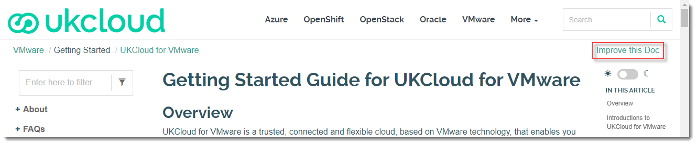
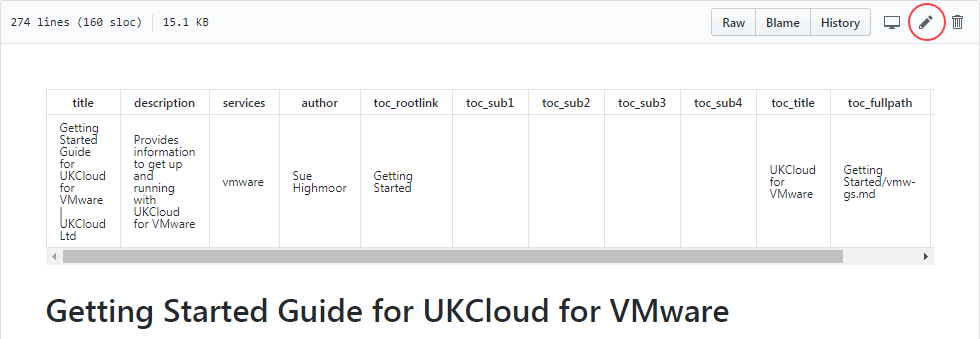
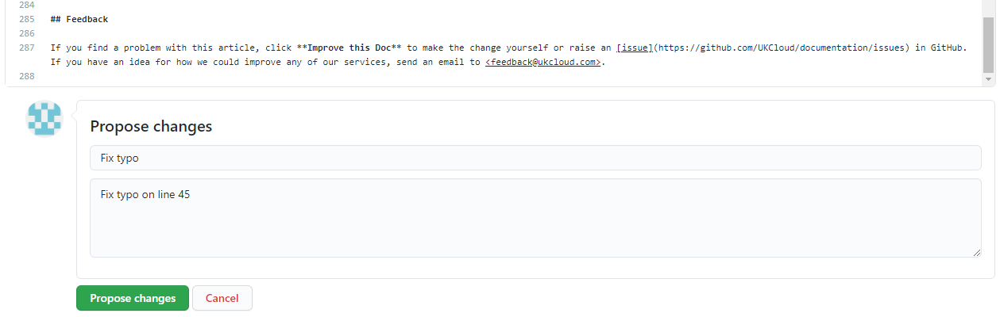
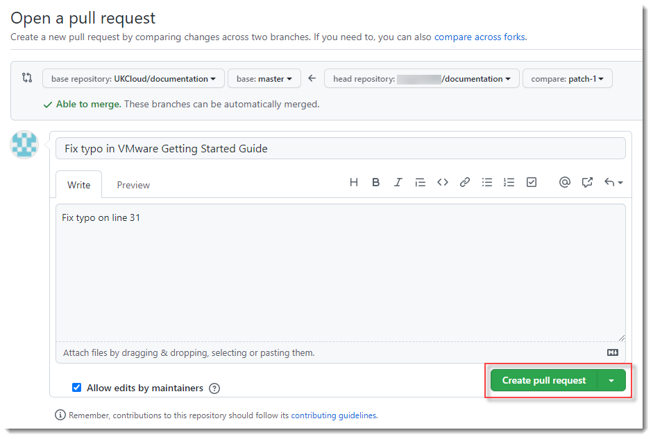

How to contribute to the UKCloud Knowledge Centre
Overview
Content for the UKCloud Knowledge Center is stored in a GitHub repository, which means that anyone with a GitHub account can submit changes to articles and even add new articles.
This article explains how to submit changes to UKCloud Knowledge Centre articles.
Important
Before making any changes, make sure you're familiar with our guidelines for contributing to Knowledge Centre articles.
Intended audience
To submit changes or new articles you must have a GitHub account.
Submitting minor changes to an existing article
Go to the UKCloud Knowledge Center at:
Find the article that you want to edit.
Click Improve this Doc to open the article in GitHub.

If necessary, log in to GitHub.
Click the Edit the file (pencil) icon.

Edit the article as required.
When you're done, at the bottom of the page, enter a short descriptive name for your change and, optionally, a longer description to provide more detail.
Click Propose file change.

Review the changes you've made.
Click Create pull request.
On the Write tab, provide more details about the change you've made, if necessary, then click Create pull request.

Note
You must create the Pull Request to submit your changes.
The Pull Request is submitted to UKCloud to review and merge into the master branch if appropriate. We may contact you to discuss the details of your changes if required.
Submitting larger changes across multiple articles or creating new articles
If you're familiar with working in GitHub and want to submit changes to multiple articles, or even create a new article, you may find it easier to fork the repository and work on your changes there before creating your Pull Request.
For a template to get you started with a new article, see UKCloud Knowledge Centre article template.
Suggesting significant changes
If you want to suggest significant changes to the Knowledge Centre, contact products@ukcloud.com to discuss your ideas.
Related videos
Feedback
If you have any comments on this document or any other aspect of your UKCloud experience, send them to products@ukcloud.com.